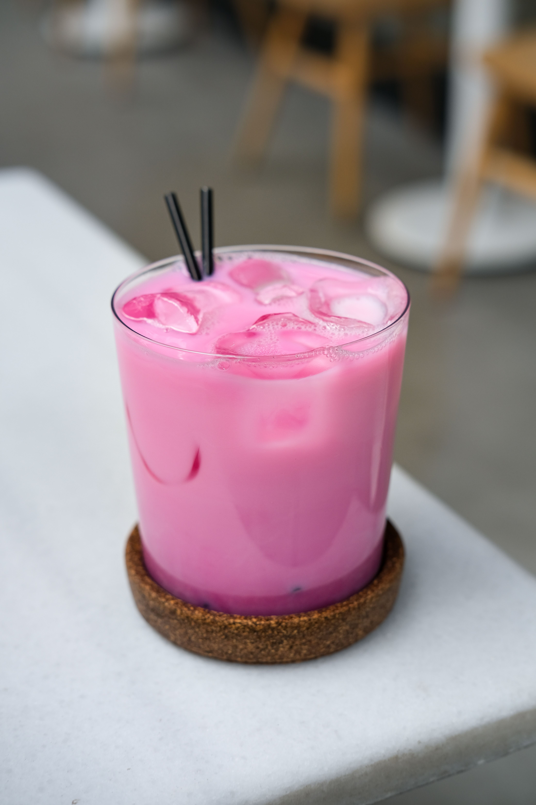

Sirap Bandung

About drink
Sirap Bandung is a popular Malaysian drink made from rose syrup and milk. It has a sweet, creamy. and refreshing taste, making it perfect for hot weather or as a cooling beverage after a meal.
Ingredients
- 3 tablespoons rose syrup
- 3 tablespoons condensed milk
- 1/2 can evaporated milk
- 1/2 jug of water
- Ice cubes as needed
Steps
- In a jug, add the rose syrup and boiled water. Stir well.
- Pour in the condensed milk and evaporated milk into the syrup mixture. Stir well.
- Add ice cubes into the jug or serve directly into a glass filled with ice.
Back to other great recipes